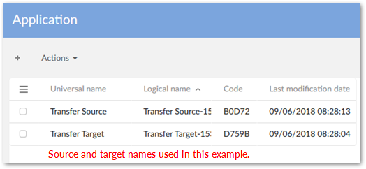
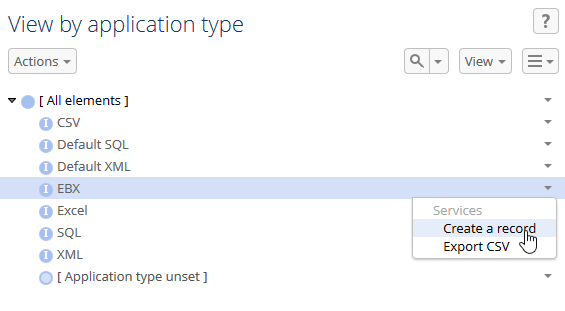
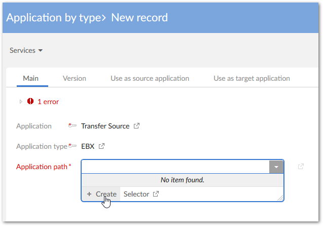
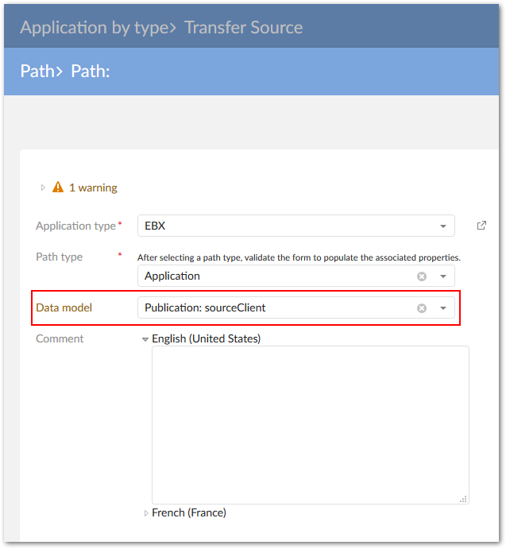
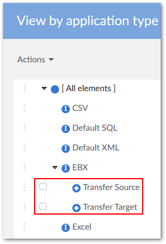
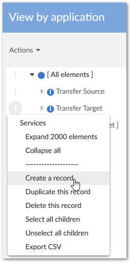
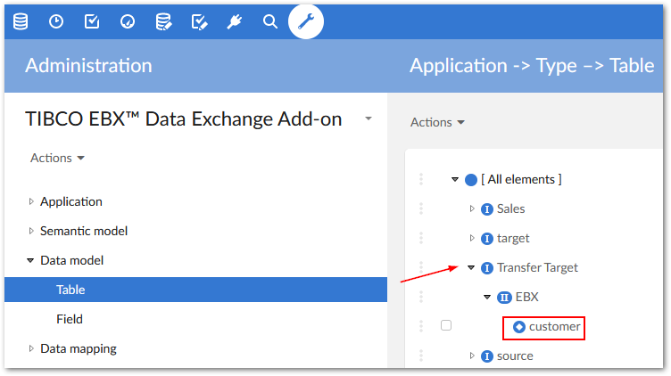
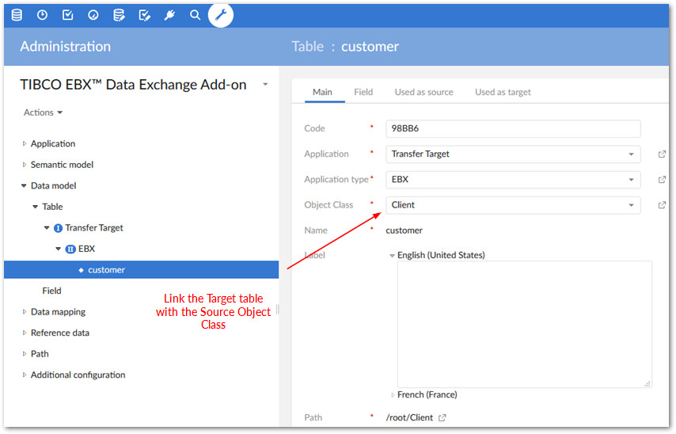

When the source and target locations are based on different data models, you must create a custom mapping configuration. This process is illustrated below and described in detail in the following section.
All steps below must be completed by an administrator.
For simplicities sake, the steps below demonstrate the configuration process using a blank canvas and a very simple model. In other words, everything will be shown as if starting from scratch. No mapping components were previously created—either user-defined, or automatically by the add-on.
This example uses the add-on's Auto data mapping feature and thus includes the additional steps involving the semantic layer. Depending on your requirements, you can automatically generate the source and target models, and manually map the tables and fields. This option will be presented in the appropriate step below.
To create a custom mapping configuration for transfer:
Create source and target applications by navigating to Administration > Integration > TIBCO EBX® Data Exchange Add-on > Application > Application and creating two new records.

Use the Application by type table to assign these applications to the EBX application type. For each application:
Create a new record under the EBX node.

Select the application from the Application type drop-down menu and save to display additional fields.
From the Application path drop-down menu, select Create.

Leave all options as is, and click Save, but do not close.
Use the Data model drop-down list to select the data model you want to use as the Source in the transfer operation.

Save and close until you return to the Application by type table. You can repeat the above steps to add the target application. Our example configuration is shown below:

In the Application by type table, run the Generate models service on the source and target applications.
On the Generation screen select the Semantic model and data model option. This option follows along with the remaining steps presented here. If you want to skip auto-data mapping, choose Data model. You will then need to create an interface that defines the applications as a source and target, and use the Data mapping domain to manually map tables and fields.
Click Generate.
This step is very important for successful transfer. You must link the Target's generated table and fields with the Source's generated Object Class and Properties. To accomplish this:
Navigate to the Object Class by Application table.
From the target application's Services menu select Create a record.

In the Object class field select the source table (Client in this case). Save and close.
Navigate to, and open the target table in the Data Model domain (see image below for sample location):

In the Object Class field select the Source Object Class that you created in an earlier step.

Save, but do not close the record. You now do this same process for each field you want to map by selecting the Field tab, opening each field, changing its Property drop-down value to the corresponding field from the source.
Navigate to the Application by type table and from the source application's Services menu, select Auto data mapping.
Select the Target application and click Mapping. From the results page that displays you can view the auto-generated mappings.